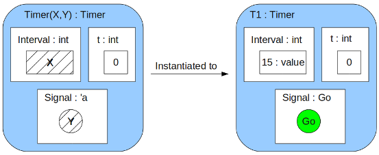
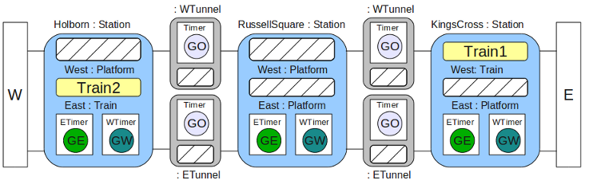

<html>
<head><title>Lope Programming Language - Design and Rationale</title</head>
<body>
<h1>Lope Programming Language</h1>

<h2>Introduction</h2>

<p>Lope is a general-purpose programming language, with a particular emphasis on mobile and distributed systems.  It is loosely based on the <a href="http://www.cl.cam.ac.uk/~rm135/uam-theme.html">Bigraphs</a> formalism, and owes an ideological debt to the <a href="http://www.itu.dk/research/theory/bpl">Bigraphical Programming Languages</a> project.</p>

<p>The fundamental unit of computation within Lope is the <em>reaction</em>.  A reaction is expressed as a rule of the form <em>r --> r'</em>, where <em>r</em> is the <em>redex</em> and <em>r'</em> the <em>reactum</em>.  This corresponds to the rule <em>if any part of the system matches the pattern defined by r, replace it with r'</em>.  This is suitably powerful to express many kinds of computation.</p>

<p>A "program" in Lope consists of three parts:
<ul>
<li>An initial state for the system, defined as a <a href="#bigraph">Bigraph</a>.<li>
<li>A set of <a href="#reactionrules">reaction rules</a>, which are also expressed as Bigraphs.</li>
<li>An <a href="#execution">Execution Plan</a>, which defines the environment in which the program will execute</a>.</li>
</ul>

<p>In understanding Lope, it is important to remember that while bigraphs are primarily a <em>modeling</em> formalism, Lope attempts to permit modeling while remaining, in essence, a <em>programming</em> language.  For this reason, pragmatics are given precedence over theoretical concerns where any conflict should arise between the two.</p>


<a name="bigraph"></a><h2>Bigraphs</h2>

<p>A bigraph is essentially two graphs that share a set of nodes.  The <em>place</em> graph defines a tree that is the nesting of nodes.  A node may contain other nodes and so on to any arbitrary depth, for example:</p>


<p>This corresponds to a tree, as shown below:</p>


<p>Lope extends the bigraphical notion of a place-graph with a concept of an implied "World" node that is the super-node of all nodes in the system. The purpose of this World node will be described later.</p>

<p>The second graph within a bigraph is the <em>link</em> graph.  This defines connectivity between nodes.  Links are bidirectional and may cross node boundaries.  More unusually, the link graph is a <em>hypergraph</em>, so a link may connect more than two nodes:</p>


<p>Combining the two graphs, we get a visual representation of a bigraph:</p>


<p>At this point we begin to diverge from the theory of bigraphs.  Whereas bigraphs have a much refined notion of <em>inner names</em> and <em>outer names</em>, we use language-based features to control composition of bigraphs in a much cruder way, and as such we do not require this distinction.</p>

<p>Another bigraphical concept of significance for Lope is the existence of <em>sites</em>.  A site is a kind of meta-node that permits another bigraph to be substituted in its place.  The crossed white areas in the following example are the two sites in this bigraph:</p>


<p>The final concept of some importance is <em>sortings</em>.  Because Lope is fundamentally a <em>programming</em> language, we will revert to the more familiar (though possibly less-accurate) term <em>types</em>.  A node can have a type, which we indicate using a syntax like: <em>name : type</em>.</p>

<p>While we are using entirely graphical representations here, a textual syntax for Lope will be introduced in a later section.</p>

<a name="reactionrules"></a><h2>Reaction Rules</h2>

<p>A reaction rule has a left hand side (a <em>redex</em>) and a right hand side (a <em>reactum</em>), which indicates that in the presence of a match with the "pattern" defined by the left hand side, the matching part of the system should be replaced with the right hand side.  We also extend this basic notion of a <em>reaction</em> with the ability to define arbitrary behaviours associated with input and output with a reaction.</p>

<h3>An example</h3>
<p>Given that I spend a lot of time on it, the first example of a bigraph with reaction rules will be a <em>simulation</em> of a small part of the <a href="http://www.tfl.gov.uk/tube">London Underground</a>.  Our simulation will only include four stations, each with an east- and west-bound platform (each of which can accomodate exactly one train at a time).  Keep in mind that this is <em>simulation</em>, not modeling.  Our goal is to be able to output something like:

<pre>
...
Train2 has left Holborn station
Train2 has entered RussellSquare station
Train2 has left RussellSquare station
Train1 is being held at KingsCross station
...
</pre>

<p>Each station will have a pre-determined "wait time", and fixed travel times between stations.  This will require a 'timer' mechanism, which I will explain prior to describing the rest of the system.</p>

<h4>Timers</h4>

<p>A timer is a pre-existing component, built using language internals.  It takes two parameters; the interval (in seconds) between events, and the node that should be introduced into the environment when the event fires:</p>



<p>Instantiation of a timer silently introduces some reaction rules into the system.  One of these reaction rules will increment the 't' value once per second.  The other reaction rule is shown below:</p>


<p>The effect of the timer firing is to introduce a new node ('Go') inside the node where the timer has been instantiated.  This result of this is that we can then write a reaction rule using 'Go' to hook into the timer firing:</p>


<p>The "IO" type is another special built-in type.  The environment provides reaction rules for IO nodes, taking their contents, printing them and then removing the IO node once it is processed.  Taking all of this together, the result is that this program will print "Hello" every 15 seconds.</p>

<h4>The System Model</h4>

<p>Having described the function of timers, I now present the first part of our example program - the initial state of the system:</p>




<p>


</body>
</html>
